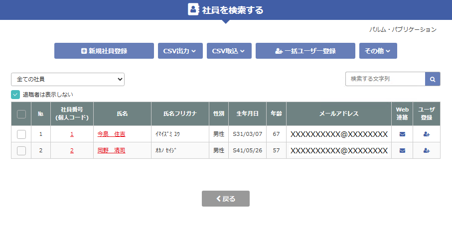

目 次
顧問先従業員の、ユーザー登録依頼について解説します。
-
５-３ユーザー登録依頼のこんな場合の対応方法
- ①全員のメールアドレスを集めるのが面倒な場合
- ②従業員がメールアドレスを持っていない場合
- ③従業員がメールアドレスもなく、Web上で登録することもできない場合
- ④QRコードが印刷されたユーザー登録のご案内のPDF出力について
-
５-４従業員のユーザー登録
- ①メールの確認
- ②ユーザー登録
- ③登録が完了した場合
５-１ 社労士事務所より顧問先従業員へのユーザー登録依頼
Esia-Zeroより、顧問先の従業員にユーザー登録依頼を行う方法について説明します。
従業員がWeb明細にて、給与明細書や源泉徴収票をWeb上で閲覧などを行うためには、ユーザー登録依頼を行い、従業員がユーザー登録を行う必要があります。
① 事前に行うこと
② ユーザー登録依頼の開始
③ ユーザー登録依頼を行う従業員の選択
ユーザー登録依頼を行う従業員を選択します。
一括でユーザー登録依頼を行うこともできます。
ユーザー登録のアイコンをクリックし、登録依頼を行います。
｜ポイント｜
ａ）ユーザー登録に表示される状況について、説明します。
ここには、ユーザー登録の状況が表示されます。表示される状況は、下記の通りです。
| 済 | 従業員がユーザー登録を行っています。 |
|---|---|
| 依頼中 | 従業員がまだ、ユーザー登録を行っていません。 |
| 初期化 | 従業員がMy-Zeroにログインを行うためのパスワードを忘れたために、パスワードの初期化を行っています。 |
| 従業員がパスワードの再設定を行うと、済に変わります。 | |
| アイコン | ユーザー登録を依頼していません。 |
ｂ）依頼中の場合は、従業員に登録を促すために再依頼メールを送信することができます。
ｃ）済の場合は、従業員がMy-Zeroにログインするためのパスワードを忘れた場合に初期化することができます。
ｄ）初期化の場合は、従業員にパスワードの再設定を促すために再依頼メールを送信することができます。
ｅ）メールアドレスは、事前に社員情報に登録されている場合は表示されます。
表示されていない場合は、ユーザー登録依頼を行う際に入力します。
④ 従業員へのユーザー登録依頼
⑤ 従業員への一括登録依頼
従業員に１人ずつ行うのは効率的ではありませんので、一括で登録依頼を行うことができます。

「一括ユーザー登録」ボタンをクリックし、全員に登録依頼を行います。
依頼済みや登録済みの従業員には、メールは送信されません。
従業員一覧を確認し、一括依頼を行います。
表示されている従業員に、ユーザー登録依頼を行います。
表示されている従業員を確認し、「送信する」ボタンをクリックしてください。
｜ポイント｜
ａ）メールアドレスが表示されている従業員は、メール送信されます。
ｂ）「メールアドレスが設定されていません。」と表示されている従業員には、メールは送信されません。
QRコードが印刷された、ユーザー登録のご案内のPDFが出力されますので、従業員に渡してください。
ｃ）従業員にメールが送信されます。
５-２ 顧問先より従業員へのユーザー登録依頼
HR-Zeroより、顧問先が従業員にユーザー登録依頼を行う方法について説明します。
従業員がWeb明細にて、給与明細書や源泉徴収票をWeb上で閲覧などを行うためには、ユーザー登録依頼を行い従業員がユーザー登録を行う必要があります。
① 事前に行うこと
事前に従業員に、Web上で行うことや、メールアドレスを集めることなどを説明してください。
｜ポイント｜
ａ）従業員には、給与明細書などをWeb明細にて渡すことや、年末調整はWeb上で入力することを説明してください。
ｂ）事前に、従業員のメールアドレスを集めてください。
ｃ）集めたメールアドレスは、社員管理に登録してください。
社労士事務所に連絡し、登録を依頼することもできます。
ｄ）全員のメールアドレスを集めるのが面倒な場合は、QRコードが印刷された用紙を配布することができます。
詳しくは、『こんな場合の対応方法』を参照してください。
ｅ）メールアドレスを持っていない従業員なども、QRコードが印刷された用紙を配布することなどができます。
詳しくは、『こんな場合の対応方法』を参照してください。
③ ユーザー登録依頼を行う従業員の選択
ユーザー登録依頼を行う従業員を選択します。
一括でユーザー登録依頼を行うこともできます。
ユーザー登録のアイコンをクリックし、登録依頼を行います。
｜ポイント｜
ａ）ユーザー登録に表示される状況について、説明します。
ここには、ユーザー登録の状況が表示されます。表示される状況は下記の通りです。
| 済 | 従業員がユーザー登録を行っています。 |
|---|---|
| 依頼中 | 従業員がまだ、ユーザー登録を行っていません。 |
| 初期化 | 従業員がMy-Zeroにログインを行うためのパスワードを忘れたために、パスワードの初期化を行っています。 |
| 従業員がパスワードの再設定を行うと、済に変わります。 | |
| アイコン | ユーザー登録を依頼していません。 |
ｂ）依頼中の場合は、従業員に登録を促すために、再依頼メールを送信することができます。
ｃ）済の場合は、従業員がMy-Zeroにログインするためのパスワードを忘れた場合に、初期化することができます。
ｄ）初期化の場合は、従業員にパスワードの再設定を促すために、再依頼メールを送信することができます。
ｅ）メールアドレスは、事前に社員情報に登録されている場合は、表示されます。
表示されていない場合は、ユーザー登録依頼を行う際に入力します。
④ 従業員へのユーザー登録依頼

⑤ 従業員への一括登録依頼
従業員に１人ずつ行うのは効率的ではありませんので、一括で登録依頼を行うことができるます。
「一括ユーザー登録」ボタンをクリックし、全員に登録依頼を行います。
依頼済みや登録済みの従業員には、メール送信されません。
従業員一覧を確認し、一括依頼を行います。
表示されている従業員に、ユーザー登録依頼を行います。
表示されている従業員を確認し、「送信する」ボタンをクリックしてください。
｜ポイント｜
ａ）メールアドレスが表示されている従業員は、メール送信されます。
ｂ）「メールアドレスが設定されていません。」と表示されている従業員には、メールは送信されません。
QRコードが印刷された、ユーザー登録のご案内のPDFが出力されますので、従業員に渡してください。
ｃ）従業員に、メールが送信されます。
５-３ ユーザー登録依頼のこんな場合の対応方法
① 全員のメールアドレスを集めるのが面倒な場合
QRコードが印刷された用紙を配布することができますので、従業員に渡し、QRコードよりユーザー登録を依頼します。
「5-1又は5-2の⑤」の、「従業員に一括でユーザー登録依頼を行う」でPDF出力を行います。
QRコードが印刷された、ユーザー登録のご案内のPDFが出力されますので従業員に渡してください。
② 従業員がメールアドレスを持っていない場合
上記①と同様に、PDF出力をすることができます。
「5-1又は5-2の④」の、「従業員にユーザー登録依頼を行う」にて、メール送信先欄に「メールアドレスを登録しません」を選択してください。
「送信する」に変わり、「認証情報をPDFで出力する」が表示されますので、クリックしてください。
③ 従業員がメールアドレスもなく、Web上で登録することもできない場合
上記①と同様に、PDF出力をすることができます。
「5-1又は5-2の④の、「従業員にユーザー登録依頼を行う」にて、メール送信先欄に、「社員がメールアドレスを持っていないので自分のメールアドレスに送信します。」を選択してください。
顧問先担当者にメールが送信されますので、担当者がユーザー登録を行うことができます。
④ QRコードが印刷されたユーザー登録のご案内のPDF出力について
５-４ 従業員のユーザー登録
Esia-Zero又はHR-Zeroより、ユーザー登録依頼のメールが届きましたら、従業員がユーザー登録を行う方法について説明します。
① メールの確認
② ユーザー登録

{kind=link}
{kind=link}
{kind=link}
{kind=link}
{kind=link}
{kind=link}
{kind=link}
{kind=link}
{kind=link}
{kind=link}
{kind=link}
{kind=link}
{kind=link}
{kind=link}
{kind=link}
③ 登録が完了した場合
{kind=link}
{kind=link}
５-５ ユーザー登録のご案内より従業員のユーザー登録
会社より受け取った、「ユーザー登録のご案内」より、従業員がユーザー登録を行う方法について説明します。
{kind=link}
{kind=link}
{kind=link}
{kind=link}
事前に、従業員にWeb上で行うことや、メールアドレスを集めることなどを説明してください。
｜ポイント｜
ａ）従業員には、給与明細書などをWeb明細にて渡すことや、年末調整はWeb上で入力することを説明してください。
ｂ）事前に、従業員のメールアドレスを集めてください。
ｃ）集めたメールアドレスは、社員管理に登録してください。
社労法務システムの個人情報に登録してから、受信することもできます。
ｄ）全員のメールアドレスを集めるのが面倒な場合は、QRコードが印刷された用紙を配布することができます。
詳しくは、『こんな場合の対応方法』を参照してください。
ｅ）メールアドレスを持っていない従業員なども、QRコードが印刷された用紙を配布することなどができます。
詳しくは、『こんな場合の対応方法』を参照してください。